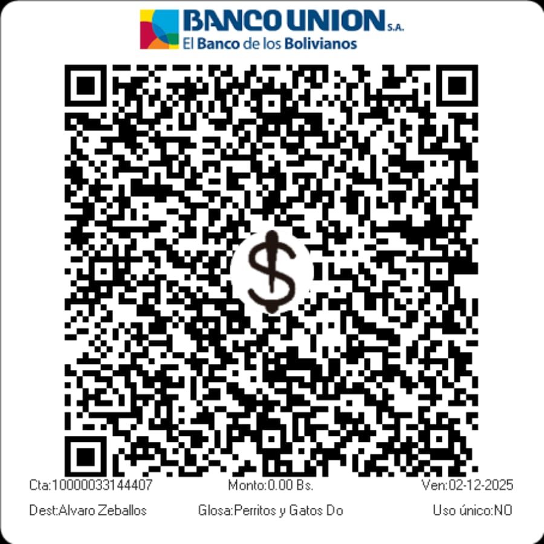

Haz una donación puntual o periódica y ayúdanos a erradicar la crueldad,
el maltrato y el abandono de perros y gatos en nuestro país.
Con tu aportación económica nos ayudas a defender sus derechos y a buscar una familia adoptiva para cada uno de ellos
Apoya Nuestra Causa
1 Haz una donación en apenas dos minutos
2 Elige el método QR para realizar tu aportación
3 Realiza tu donación como particular o como empresa
4 ¡Tu aportación salva vidas!
5 ¡Gracias por tu ayuda!
Quiero ayudar con mi aportación
Haz tu Donación Escaneando el Código QR

Escanea el código con tu móvil para realizar tu donación.